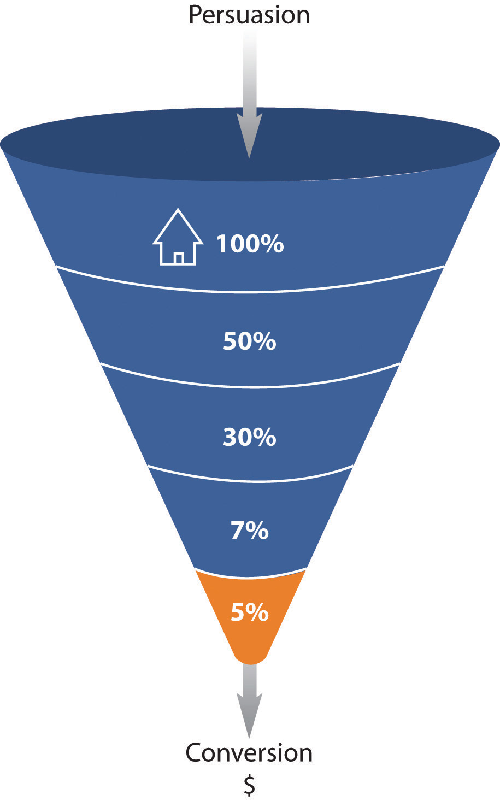
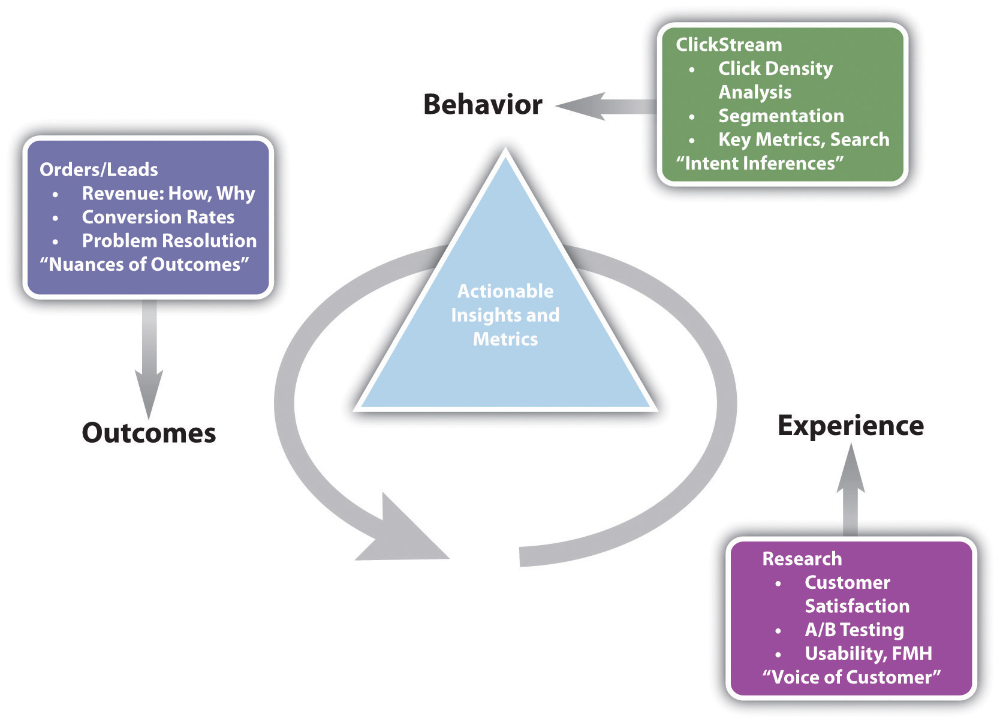
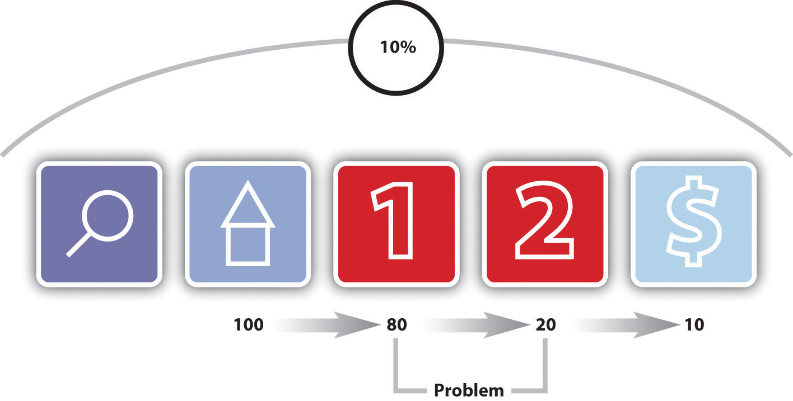
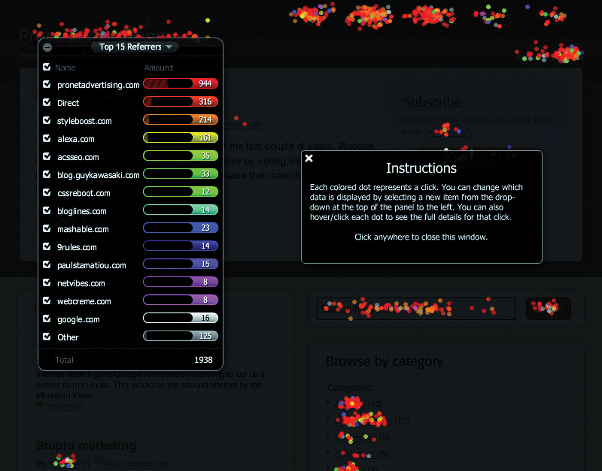
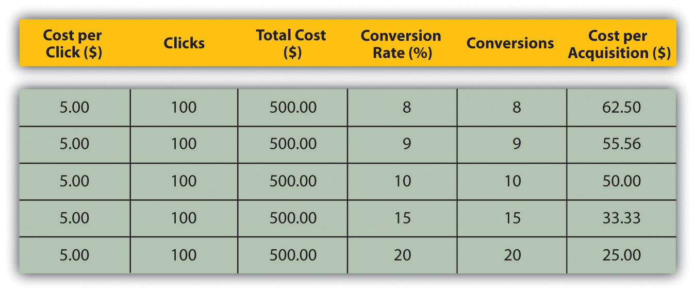
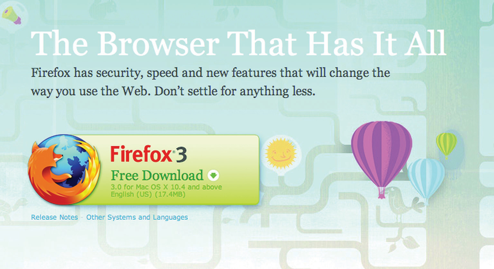

Picture the scene: you’ve opened up a new fashion retail outlet in the trendiest shopping center in town. You’ve spent a small fortune on advertising and branding. You’ve gone to great lengths to ensure that you’re stocking all the prestige brands. Come opening day, your store is inundated with visitors and potential customers. And yet, you are hardly making any sales. Could it be because you have one cashier for every hundred customers? Or maybe it’s the fact that the smell of your freshly painted walls is chasing customers away before they complete a purchase. While it can be difficult to isolate and track the factors affecting your revenue in this fictional store, move it online and you have a wealth of resources available to assist you with tracking, analyzing, and optimizing your performance.
To a marketer, the Internet offers more than new avenues of creativity. By its very nature, the Internet allows you to track each click to your site and through your site. It takes the guesswork out of pinpointing the successful elements of a campaign and can show you very quickly what’s not working. It all comes down to knowing where to look, knowing what to look for, and knowing what to do with the information you find.
Testing, analyzing, and optimizing are not new to marketing. Being able to gauge the success of any campaign is crucial to growth.
Early Web analytics packages came to the fore in the mid-1990s, a couple of years after the first Mosaic browser was launched. Early analysis reflected the nature of the early Web, focusing only on hits with some very basic click-stream analysis. With one-page Web sites being the norm, it was enough to know how many clicks came to the Web site. Traffic meant you were doing well. You can still see hit counters on some Web sites today. These Web sites usually look as sophisticated as this tool.
However, as Web sites became more complex, and as more people had access to the Internet, better analysis became more important. Measuring hits was, and is, not enough. In fact, measuring hits is a fairly meaningless task. Web analytics split into two types of tools: page tags and log files. Both continue to become more sophisticated, capturing information about visitors to a Web site, and recording detailed information related to their time on the site. There are several log-file analysis tools that cost nothing to use. Sophisticated page-tag Web analytics became available for free when Google bought Urchin in March 2005 and launched Google Analytics as a free service. Are you wondering what the difference is between page tagging and log-file analysis? Don’t worry, it’s coming!
When it comes to Web analytics and conversionA visitor completing a target action. optimization, it is all about preparation. It is not just about collecting data; you need to know what data you are going to use. Once data have been collected, you need to analyze them and let the numbers inform your optimization tasks.
The key to the success of any Web site or online campaign is that it is designed with clearly defined goalsThe defined action that visitors should perform on a Web site or the purpose of the Web site. in mind. These will be used to measure the success of the Web site or campaign and are crucial to maintaining focus within online activities.
The goal of a Web site or campaign may depend on the type of industry, but usually it will be an action that results in revenue for the company. The goal of a Web site is also intrinsically linked to the action that you want visitorsAn individual visiting a Web site that is not a search engine spider or a script. to perform.
Although a Web site has an ultimate goal, the process of achieving that goal can be broken down into several steps. These are called eventsA step a visitor takes in the conversion process. or microconversions. Analyzing each step in the process is called funnelA defined path that visitors should take to reach the final objective. analysis or path analysis and is critical to understanding where problems in the conversion process may lie. The clicks visitors make once landed on a site, whether they follow the desired steps or not, are referred to as a click pathThe clicks taken by a visitor to a Web site in one visit..
Figure 15.1 Funnel Analysis
For example, on a hotel Web site, the ultimate goal is that visitors to the site make a booking on the Web site with a credit card.
Each step in the process is an event that can be analyzed as a conversion point:
One expects fewer users at each step; that’s why it’s called a funnel. Increasing the number of visitors who progress from one step to the next will go a long way to improving the overall conversion rate of the site.
There are also other pointers, or indicators, that you are achieving your goals. These are factors that can be optimized to ensure that your ultimate goal is being met. In Web analytics, these are referred to as key performance indicators (KPIs)Also known as key success indicators (KSIs), these help an organization define and measure progress toward organizational goals.. These need to be defined so you monitor the entire process to achieving your Web site goal. They can also give clues as to what factors you need to work on so as to reach your goal.
Events and KPIs are not the same thing. Events can be seen as steps toward a goal and are usually an action performed by a visitor. KPIs are indicators that the Web site’s goals are being met.
Here are some example goals and KPIs for different Web sites:
For a hospitality e-commerce site, such as http://www.expedia.com, one would expect the following goals:
For the same site, one would expect the following KPIs:
For news and content sites, such as http://www.news24.com, one would expect the following goals:
For the same site, one would expect the following KPIs:
KPIs help you to look at the factors that you can influence. For example, if your goal is to increase revenue, you could look at ways of increasing your conversion rate (that is the number of visitors who purchase something). One way of increasing conversion rate could be to offer a discount. So you would have more sales but probably a lower average order value. Or you could look at ways of increasing the average order value, so the conversion rate would stay the same, but you increase the revenue from each conversion.
Once you have established your goals, events, and KPIs, you need to be able to track the data that will help you analyze how you are performing and how you can optimize your Web site or campaign.
KPIs and events break down the factors and steps that can be influences so as to achieve the goals of the Web site. They allow you to see on a micro level what is affecting performance on a macro level.
Currently, there are two main technology approaches for collecting Web analytics data: log-file analysisAnalysis of log records, which shows where visitors are coming from, how often they visit, and their path through the site. When used in conjunction with cookies, this analysis provides much more in-depth information. and page taggingThe process of tagging Web pages with embedded JavaScript files..
Log-file analysis software reads the records, called log filesText files created on the server each time a click takes place, capturing all activity on the Web site., on the Web server, which record all clicks that take place on the server. Web servers have always stored all the clicks that take place in a log file, so the software interprets data that have always been available. A new line is written in a log file with each new request. For example, clicking on a link, an Ajax call, or submitting a form will each result in a new line being written.
Page tagging, on the other hand, sends information to a third-party server, where statistics can be generated. The browser executes JavaScript code that communicates with the tracking software, creating page tagsJavaScript files embedded on a Web page and executed by the browser..
Pixel tracking can be used to track e-mail campaigns. Here, a tiny, transparent pixel is placed in the e-mail. When you load the images in the e-mail, you will also load the tiny image that tracks your activity.
Caching is when a browser stores some of the information for a Web page so it can retrieve the page more quickly when you return to it. If a Web page is cached by your browser, when you look at the page again, it will not send a request to the Web server. This means that that particular visit will not show in the log files. Page tagging, however, would capture this visit. But some browsers do not support JavaScript, and page tagging would not capture those visits. This is why there is often a discrepancy in the numbers reported by the two services.
In terms of log-file analysis, you should know the following:
In terms of page tagging, you should know the following:
Because of the different methods of collecting data, the raw figures produced by the two services will differ. Sometimes, both are used to analyze a Web site. However, raw figures not matching up should not be a problem. It is through interpreting these figures that you will be able to understand how effective your eMarketing efforts are.
Web site analytics packages can be used to measure most, if not all, eMarketing campaigns. Web site analysis should always account for the various campaigns being run. For example, generating high traffic volumes by employing various eMarketing tactics like SEO (search engine optimization), PPC (pay per click), and e-mail marketing can prove to be a pointless and costly exercise if the visitors are leaving your site without achieving one (or more) of your Web site’s goals. Conversion optimization aims to convert as many of a Web site’s visitors as possible into active customers.
There are three types of Web analytics metrics:
Why would you want to look at the activity of a single visitor? Why would you want to segment the traffic for analysis?
In analysis, metrics can be applied to three different universes:
Here are some of the key metrics you will need to get started on Web site analytics:
Unique visitors. The number of individual people visiting the Web site one or more times within a period of time. Each individual is only counted once. Types of visitors can be categorized as follows:
A repeat visitor may be either a new visitor or a return visitor, depending on the number of times he or she has visited the site within the time period being analyzed.
These are the most basic Web metrics. They tell you how much traffic your Web site is receiving. Looking at repeat and returning visitors can tell you about how your Web site creates loyalty. As well as growing overall visitor numbers, a Web site needs to grow the number of visitors who come back. An exception might be a support Web site—repeat visitors could indicate that the Web site has not been successful in solving the visitor’s problem. Each Web site needs to be analyzed based on its purpose.
The following help characterize the visit to a particular Web site:
ReferrerThe URL that originally generated the request for the current page.. The URL (uniform resource locator) that originally generated the request for the current page.
These are the terms that tell you how visitors reach your Web site and how they move through the Web site. The way that a visitor navigates a Web site is called a click path. Looking at the referrers, both internal and internal, allows you to gauge a click path that visitors take.
The following help characterize how visitors move through the Web site:
When visitors view a page, they have two options: leave the Web site, or view another page on the Web site. These metrics tell you how visitors react to your content. Bounce rate can be one of the most important metrics that you measure! There are a few exceptions, but a high bounce rate usually means high dissatisfaction with a Web page.
Other metrics that apply to eMarketing tactics include the following:
For the most up-to-date definitions, visit http://www.webanalyticsassociation.org to download the latest definitions in PDF (portable document format).
In order to test the success of your Web site, you need to remember the TAO of conversion optimization:
Using your goals and KPIs, you’ll know what metrics you will be tracking. You will then need to analyze these results and take appropriate actions. And the testing begins again!
Metrics use the following:
A number is just a number until you can interpret it. Typically, it is not the raw figures that you will be looking at, but what they can tell you about how your users are interacting with your Web site.
Avinash Kaushik, author of Web Analytics: An Hour a Day, recommends a three-prong approach to Web analytics:
Web users’ behavior can indicate a lot about their intent. Looking at referral URLs (uniform resource locators) and search terms used to find the Web site can tell you a great deal about what problems visitors are expecting your site to solve.
Click density analysis, segmentationFiltering visitors into distinct groups based on characteristics so as to analyze visits., metrics that define the visit, and content can all be used to gauge the intent of your visitors.
Figure 15.2 The Trinity Approach to Analytics
Source: Adapted from http://www.kaushik.net/avinash/wp-content/uploads/2006/08/trinity_strategy.jpg. Used by permission from Avinash Kaushik.
A crucial, and often overlooked, part of this analysis is that of internal search. Internal search refers to the searches that users perform on the Web site of the Web site’s content. While a great deal of time is spent analyzing and optimizing external search—using search engines to reach the Web site in question—analyzing internal search goes a long way toward determining how effective a Web site is in delivering solutions to visitors.
Internal and external search data are likely to be very different and can go a long way to exposing weaknesses in site navigation and the internal search itself and can expose gaps in inventory on which a Web site can capitalize.
For example, consider the keywords a user might use when searching for a hotel Web site and keywords that might be used by a the user when on the Web site.
Keywords to search for a hotel Web site might be the following:
Once on the Web site, the user might use the site search function to find out further information. Keywords he or she might use include the following:
Analytics tools can show what keywords users search for, what pages they visit after searching, and, of course, whether they search again with a variation of or different keywords.
At the end of the day, you want people who visit your Web site to perform an action that increases the Web site’s revenue. Analysis of goals and KPIs (key performance indicators) indicate where there is room for improvement. Look at user intent to establish how your Web site meets the user’s goals and if they match with the Web site goals. Look at user experience to determine how outcomes can be influenced.
Figure 15.3 Analyzing Each Step in the Conversion Process
Figure 15.3 "Analyzing Each Step in the Conversion Process" shows how analyzing each event can show where the Web site is not meeting expectations.
After performing a search, one hundred visitors land on the home page of a Web site. From there, eighty visitors visit the first page toward the goal. This event has an 80 percent conversion rate. Twenty visitors take the next step. This event has a 25 percent conversion rate. Ten visitors convert into paying customers. This event has a 50 percent conversion rate. The conversion rate of all visitors who performed the search is 10 percent, but by breaking this up into events we can analyze and improve the conversion rate of each event.
Determining the factors that affect user experience involves testing to determine why users do what they do. Understanding why users behave in a certain way on your Web site will show you how that behavior can be influenced so as increase successful outcomes.
Testing can be performed in a number of ways:
A/B split testing measures one variable at a time to determine its effect on an outcome. Different versions are created for the variable you want to test. For example, consider the following tests:
In these cases, only one variable is tested at a time, and all other elements on the Web page, in the e-mail, or part of the PPC advertisement remain the same. You can test more than one version of the variable; it just means that you will need to test for longer.
Traffic is then randomly distributed to the different versions, and the outcomes are measured for each version of the variable. The results are then interpreted to see if there is a statistically significant difference between the variables. The version producing the best results can then be employed.
Remember studying statistics? It’s going to come in handy here. You don’t need to send huge amounts of traffic to a different version of a Web page to determine success. In fact, it can be risky to do so.
Multivariate testing allows you to test many variables at once and still determine which version of each variable has a statistically significant effect on your outcomes. For Web sites, there are a number of vendors who will host pages that are being tested in this way remotely, if you do not have the technology to do this in-house.
Multivariate testing allows you to test, for example, the following:
The combinations are endless, and because of that, it is easy to get stuck analyzing every tiny detail. Successful testing relies on having clear objectives to begin with, and sufficient traffic to warrant such detail.
A listening lab could also be called a watching lab, as this involves watching users interact with your site and listening to their comments. Professional listening labs can be hired, or as Steve Krug points out in his book Don’t Make Me Think! they can be set up fairly easily in a quiet part of an office.Steve Krug, Don’t Make Me Think! A Common Sense Approach to Web Usability, 2nd ed. (Berkeley, CA: New Riders, 2005).
In a listening lab, a moderator asks users to perform tasks on a Web site and asks them to describe what they are thinking and doing. These exercises can provide important information that looking at data cannot.
Companies such as Crazy Egg (http://www.crazyegg.com) have software that can show you exactly where users click on a Web page, regardless of whether they are clicking on links or not.
Figure 15.4 A Heat Map on Crazy Egg
It produces information that helps you know what areas of a Web site are clickable but attract few or no clicks, and areas that are not clickable but have users attempting to click there. This can show you what visual clues on your Web page influence where your visitors click, and this can be used to optimize the click path of your visitors.
There are many factors that could be preventing your visitors from achieving specific end goals. From the tone of the copy to the color of the page, everything on your Web site may affect conversions. Possible factors are often so glaringly obvious that one tends to miss them or so small that they are dismissed as trivial. Changing one factor may result in other unforeseen consequences, and it is vital to ensure that we don’t jump to the wrong conclusions.
There are many techniques that can be used to improve conversion rates, depending on which area is being improved. A better landing page, for example, can reduce the drop-off between a PPC and adding a product to the shopping cart. And reducing that drop-off can go a long way to improving the cost per acquisition (CPA). Figure 15.5 shows how small changes in conversion rate can make a big difference to the CPA.
One of the most important aspects of conversion optimization is keeping visitors focused on their goals. To do this, it is important to maintain a highly visible and influential click path from the landing page to the goal or action page that is as short as possible. The more links and irrelevant distractions that are present on a site, the less likely visitors are to remain focused on achieving your desired objectives.
Figure 15.5
Find out if people are looking for something specifically and whether it can be tied to a source. Don’t take people to your home page by default if they’re looking for specific keywords and are clicking through on designated links or (more importantly) are coming through a PPC campaign. Again, keep them focused on the defined goal; rather, let them enter where they are most comfortable thereby keeping the path to conversion as short as possible.
Every visitor to a Web site is different, but there are some ways we can characterize groups of users and analyze metrics for each group. This is called segmentation. Some segments include the following:
Users who arrive at your site via search engines, those who type in the URL directly, and those who come from a link in an online newspaper article are all likely to behave differently. As well as conversion rates, click path and exit pages are important metrics to consider. Consider the page on which these visitors land to enter your Web site—can anything be done to improve their experience?
Users who enter your Web site through different pages can behave very differently. What can you do to affect the page on which they are landing, or what elements of the landing page can be changed to influence outcomes?
Consider the effects of technology on the behavior of your users. High bounce rate for low-bandwidth users, for example, could indicate that your site is taking too long to load. Visitors who use open-source technology might expect different things from your Web site to other visitors. Different browsers might show your Web site differently—how does this affect these visitors?
Do users from different countries, provinces, or towns behave differently on your Web site? How can you optimize user experience for these different groups?
How is the click path of a first-time visitor different from that of a returning visitor? What parts of the Web site are more important to first-time visitors?
The very first thing you need when it comes to Web analytics is a Web analytics tool for gathering data. Some are free and some require a fee. You will need to determine which package best serves your needs. Bear in mind that it is possible to switch vendors with log-file analysis software without losing historical data, but it is not as easy to do so with page-tagging software.
The following are some leading providers:
When it comes to running split tests, if you don’t have the technical capacity to run these in-house, there are a number of third-party services that can host these for you. Google’s Web site Optimizer (http://www.google.com/websiteoptimizer) can help you do just that.
A basic split-test calculator is available at http://www.usereffect.com/split-test-calculator. Crazy Egg (http://www.crazyegg.com) is a strange-sounding name, but this tool can help you to see exactly where visitors are clicking on a Web page.
Tracking, analyzing, and optimizing are vital to the success of any marketing efforts, and even more so with online marketing efforts. eMarketing allows for easy and fast tracking and the ability to optimize frequently.
However, it can be easy to become fixated on figures instead of using them to optimize campaign growth. Generally, macro, or global, metrics should be looked at before starting to analyze micro elements of a Web site. Testing variables is vital to success. Results always need to be statistically analyzed, and marketers should let these numbers make the decisions. Never assume the outcome—wait for the numbers to inform you.
Testing can be performed via the following:
Web sites with high volumes of traffic have the opportunity to test regularly and make sure that they are optimizing conversions. Online retailers such as Amazon.com make frequent small changes, hardly noticed by their visitors, to ensure that they are converting as many visitors into buyers as possible. Likewise, the high volume of traffic to Google’s home page allows it to test new features with a small percentage of visitors before rolling them out to all users.
Firefox is a free, open-source browser that is currently used by about 47 percent of the market, and it is gaining market share. When launching version 3 of the browser, Firefox 3, Firefox developer Mozilla (http://www.mozilla.org) aimed to enter the Guinness Book of Records for most software downloads in twenty-four hours starting June 17, 2008. The aim was 5 million downloads. Firefox 2.0 registered 1.6 million downloads on the first day it was made available on October 24, 2006.
Mozilla wanted visitors to the Web site to perform one action: download Firefox. With a publicized record attempt, it was necessary to make the process as smooth as possible. The landing page for Firefox 2 was already successful. FutureNow conversion analyst Josh Hay noted that “their Call to Action does so many things right. The non-standard shape stands out from the background of the page, and has been given a persuasive color that draws the eyes to it. They’ve even used it to reinforce their brand. Within the Call to Action, Firefox lists the benefit and tells the visitor exactly what he is getting.”Josh Hay, “Large Red Buttons? Oh My!” FutureNow, February 15, 2007, http://www.grokdotcom.com/2007/02/15/large-red-buttons-oh-my (accessed June 20, 2010).
Figure 15.6 Firefox 2 Download Available for Free from http://www.mozilla.com/firefox
Figure 15.7 Firefox 3 Download Available for Free from http://www.mozilla.com/firefox
So, with something that works, what can be done to make it work better?
With the new download page, the download button is in the same basic design, but with a few nuanced changes.
First, the name and version of the browser has changed position on the page. It has moved from a large on-page heading and onto the actual download button. The text on the button has also changed, from “Download Firefox—Free” to “Free Download.” There is also a little image on the Firefox 3 download button that was not used on the Firefox 2 landing page—an arrow to indicate the download action. The information about the version of the browser has also been split over two lines in the Firefox 3 download button.
The download button and the placement of the Firefox logo (the fox around the globe) have had a subtle revision. The logo is now clearly integrated into the download button. On the Firefox 3 page, the hyperlinks are not underlined, emphasizing the single purpose of the download button.
Did it work? Mozilla records that there were over 8 million downloads of Firefox 3 in its first twenty-four hours of release—over 5,500 downloads a minute! Mozilla’s commitment to optimizing the all-important Firefox 3 landing page paid off.
Jason Burby, Angie Brown, and the WAA Standards Committee, “Web Analytics Definitions—Version 4.0,” Web Analytics Association, August 16, 2007, http://www.webanalyticsassociation.org/resource/resmgr/PDF_standards/WebAnalyticsDefinitionsVol1.pdf (accessed March 3, 2008).
Robert Gorell, “Firefox 3: How to Convert Seven Million Visitors in a Day,” GrokDotCom, June 18, 2008, http://www.grokdotcom.com/2008/06/18/mozilla-firefox-3-download (accessed March 3, 2008).
“Help Yourself to a KPI!” GrokDotCom, June 1, 2004, http://www.grokdotcom.com/topics/helpyourselftoakpi.htm (accessed March 3, 2008).
Avinash Kaushik, “Are You Into Internal Site Search Analysis? You Should Be,” Occam’s Razor, June 26, 2006, http://www.kaushik.net/avinash/2006/06/are-you-into-internal-site-search-analysis-you -should-be.html (accessed March 3, 2008).
Avinash Kaushik, “Kick Butt with Internal Site Search Analytics,” Occam’s Razor, October 20, 2007, http://www.kaushik.net/avinash/2007/10/kick-butt-with-internal-site-search -analytics.html (accessed March 3, 2008).
Avinash Kaushik, “Trinity: A Mindset and Strategic Approach,” Occam’s Razor, August 10, 2006, http://www.kaushik.net/avinash/2006/08/trinity-a-mindset-strategic-approach.html (accessed March 3, 2008).